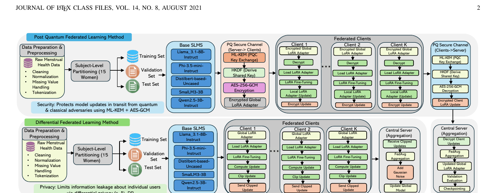
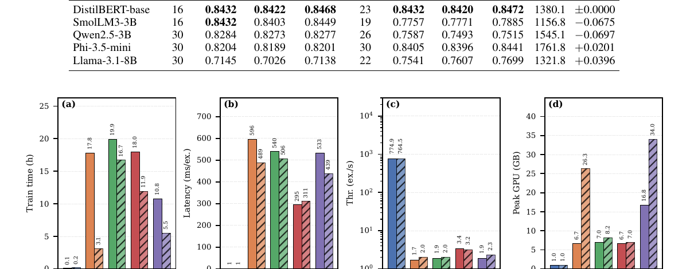

Subject-level federation
Each participant is treated as an independent federated client to avoid centralizing raw records.
IEEE Transactions on Consumer Electronics · Research Project
A privacy-preserving framework for menstrual phase classification that compares post-quantum-secure communication with client-level differential privacy.
Southern Illinois University · Florida Atlantic University · Jazan University
LOCAL CLASSIFICATION
Research motivation
Menstrual health applications may process sensitive information related to bleeding, pain, mood, hormone levels, sleep, fertility, and reproductive health. The proposed system keeps participant records local and shares only protected model updates.
Each participant is treated as an independent federated client to avoid centralizing raw records.
LoRA is used for decoder models, while DistilBERT is trained as a sequence classifier.
Accuracy, F1, latency, throughput, memory, training time, communication, and privacy are measured.
Proposed framework

Protects global adapters and local client updates during transmission.
Limits information leakage from each participant’s model update.
Experimental results
Select a privacy setting and model to view the reported results.
ACCURACY
Best overall balance of classification utility and deployment efficiency.

| Model | Setting | Rounds | Accuracy | Macro-F1 | Weighted-F1 | Training | Latency | Peak GPU |
|---|
Privacy–utility trade-off
Preserves model utility because updates are encrypted rather than perturbed, but communication cost grows with adapter size.
Limits update-level information leakage through clipping and noise, but may reduce accuracy or increase training and memory cost.
DistilBERT maintains 0.8432 accuracy under both settings while requiring much less time, memory, latency, and communication.
The reported differential privacy ε values are large because a small noise multiplier was selected to preserve utility. These experiments should not be interpreted as providing strong worst-case privacy.